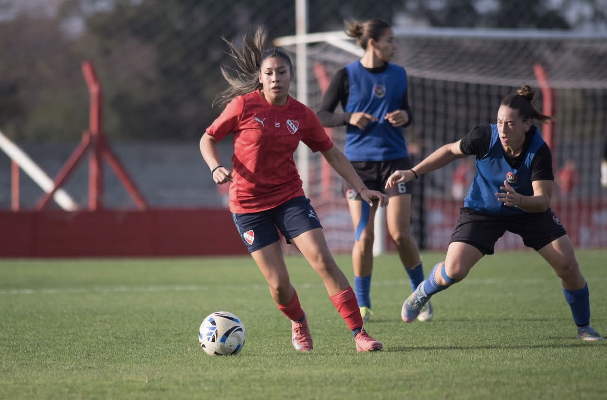

Las Santitas ganaron en Villa Domínico por la Fecha 12, llegaron a 22 puntos con un partido menos y son las líderes de la Tabla Anual, con 57.
 San Lorenzo, en el Clausura. Imagen: Vamos Ciclón (archivo)
San Lorenzo, en el Clausura. Imagen: Vamos Ciclón (archivo)
San Lorenzo goleó 5-1 a Independiente en Villa Domínico y se transformó en una de las candidatas del Clausura. Luciana Zacmon marcó tres goles, y Camila López y Emily Arias completaron la cuenta. Juliana Franco descontó para las Diablas. Con el resultado, las Santitas llegaron a 22 puntos en 11 partidos, con una diferencia de gol de +13, la mejor del torneo.
La delantera ya había marcado en el 3-1 a Huracán por la Fecha 11, en el que también convirtieron Florencia Coronel y Katherine Castillo. Con el triplete a Independiente, Zacmon suma cuatro goles en dos partidos y pasó a ser una de las figuras de este tramo del torneo.
 Las Santitas. Imagen: Mundo Azulgrana (archivo)
Las Santitas. Imagen: Mundo Azulgrana (archivo)
San Lorenzo está a cuatro puntos de Boca, que lidera con 26, y a dos de Talleres, Banfield y San Luis FC (24), pero tiene un partido menos que casi todos sus rivales. Todavía le queda ese compromiso pendiente. Para la Fecha 13, el equipo de Boedo recibe a Unión el jueves 12 de noviembre, a las 15, en la Ciudad Deportiva.
La goleada también consolidó a San Lorenzo en lo más alto de la Tabla Anual, que suma los puntos del Apertura y el Clausura: tiene 57, cuatro más que Racing (53), que empató 2-2 con Huracán, y siete más que Talleres (50). Independiente, en cambio, quedó con 9 puntos en el Clausura y 22 en la anual.

Las Diablas, que siguen sin levantar. Imagen: archivo femeninoinfoSeguir leyendo
Seguinos en redes